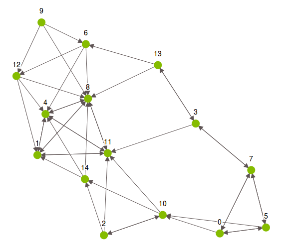

Nearest Neighbors
The Turi Create nearest neighbors
toolkit
is used to find the rows in a data table that are most similar to a
query row. This is a two-stage process, analogous to many other Turi
Create toolkits. First we create a
NearestNeighborsModel,
using a reference dataset contained in an
SFrame.
Next we query the model, using either the query or the
similarity_graph method. Each of these methods is explained further
below.
For this chapter we use an example dataset of house attributes and prices:
import turicreate as tc
sf = tc.SFrame.read_csv('houses.csv')
sf.head(5)+------+---------+------+--------+------+-------+
| tax | bedroom | bath | price | size | lot |
+------+---------+------+--------+------+-------+
| 590 | 2 | 1.0 | 50000 | 770 | 22100 |
| 1050 | 3 | 2.0 | 85000 | 1410 | 12000 |
| 20 | 3 | 1.0 | 22500 | 1060 | 3500 |
| 870 | 2 | 2.0 | 90000 | 1300 | 17500 |
| 1320 | 3 | 2.0 | 133000 | 1500 | 30000 |
+------+---------+------+--------+------+-------+
[5 rows x 6 columns]Because the features in this dataset have very different scales (e.g. price is in the hundreds of thousands while the number of bedrooms is in the single digits), it is important to normalize the features. In this example we standardize so that each feature is measured in terms of standard deviations from the mean (see Wikipedia for more detail). In addition, both reference and query datasets may have a column with row labels, but for this example we let the model default to using row indices as labels.
for c in sf.column_names():
sf[c] = (sf[c] - sf[c].mean()) / sf[c].std()First, we create a nearest neighbors model. We can list specific features to use in our distance computations, or default to using all features in the reference SFrame. In the model summary below the following code snippet, note that there are three features, because our second command specifies three numeric SFrame columns as features for the model. There are also three unpacked features, because each feature is in its own column.
model = tc.nearest_neighbors.create(sf)
model = tc.nearest_neighbors.create(sf, features=['bedroom', 'bath', 'size'])
model.summary()Class : NearestNeighborsModel
Attributes
----------
Distance : euclidean
Method : ball tree
Number of examples : 15
Number of feature columns : 3
Number of unpacked features : 3
Total training time (seconds) : 0.0091
Ball Tree Attributes
--------------------
Tree depth : 1
Leaf size : 1000To retrieve the five closest neighbors for new data points or a subset of
the original reference data, we query the model with the query method.
Query points must also be contained in an SFrame, and must have columns with the
same names as those used to construct the model (additional columns are allowed,
but ignored). The result of the query method is an SFrame with four columns:
query label, reference label, distance, and rank of the reference point among
the query point's nearest neighbors.
knn = model.query(sf[:5], k=5)
knn.head()+-------------+-----------------+----------------+------+
| query_label | reference_label | distance | rank |
+-------------+-----------------+----------------+------+
| 0 | 0 | 0.0 | 1 |
| 0 | 5 | 0.100742954001 | 2 |
| 0 | 7 | 0.805943632008 | 3 |
| 0 | 10 | 1.82070683014 | 4 |
| 0 | 2 | 1.83900997922 | 5 |
| 1 | 1 | 0.0 | 1 |
| 1 | 8 | 0.181337317202 | 2 |
| 1 | 4 | 0.181337317202 | 3 |
| 1 | 11 | 0.322377452803 | 4 |
| 1 | 12 | 0.705200678007 | 5 |
+-------------+-----------------+----------------+------+
[10 rows x 4 columns]In some cases the query dataset is the reference dataset. For this task of
constructing the similarity_graph on the reference data, the model's
similarity_graph can be used. For brute force models it can be almost twice as
fast, depending on the data sparsity and chosen distance function. By default,
the similarity_graph method returns an
SGraph
whose vertices are the rows of the reference dataset and whose edges indicate a
nearest neighbor match. Specifically, the destination vertex of an edge is a
nearest neighbor of the source vertex. similarity_graph can also return
results in the same form as the query method if so desired.
sim_graph = model.similarity_graph(k=3)
Distance functions
The most critical choice in computing nearest neighbors is the distance function that measures the dissimilarity between any pair of observations.
For numeric data, the options are euclidean, manhattan,
cosine, and transformed_dot_product. For data in dictionary
format (i.e. sparse data), jaccard and weighted_jaccard are also
options, in addition to the numeric distances. For string features, use
levenshtein distance, or use the text analytics toolkit's
count_ngrams feature to convert strings to dictionaries of words or
character shingles, then use Jaccard or weighted Jaccard distance.
Leaving the distance parameter set to its default value of auto
tells the model to choose the most reasonable distance based on the type
of features in the reference data. In the following output cell, the
second line of the model summary confirms our choice of Manhattan
distance.
model = tc.nearest_neighbors.create(sf, features=['bedroom', 'bath', 'size'],
distance='manhattan')
model.summary()Class : NearestNeighborsModel
Attributes
----------
Distance : manhattan
Method : ball tree
Number of examples : 15
Number of feature columns : 3
Number of unpacked features : 3
Total training time (seconds) : 0.013
Ball Tree Attributes
--------------------
Tree depth : 1
Leaf size : 1000Distance functions are also exposed in the turicreate.distances
module. This allows us not only to specify the distance argument for a
nearest neighbors model as a distance function (rather than a string),
but also to use that function for any other purpose.
In the following snippet we use a nearest neighbors model to find the closest reference points to the first three rows of our dataset, then confirm the results by computing a couple of the distances manually with the Manhattan distance function.
model = tc.nearest_neighbors.create(sf, features=['bedroom', 'bath', 'size'],
distance=tc.distances.manhattan)
knn = model.query(sf[:3], k=3)
knn.print_rows()
sf_check = sf[['bedroom', 'bath', 'size']]
print("distance check 1:", tc.distances.manhattan(sf_check[2], sf_check[10]))
print("distance check 2:", tc.distances.manhattan(sf_check[2], sf_check[14]))+-------------+-----------------+-----------------+------+
| query_label | reference_label | distance | rank |
+-------------+-----------------+-----------------+------+
| 0 | 0 | 0.0 | 1 |
| 0 | 5 | 0.100742954001 | 2 |
| 0 | 7 | 0.805943632008 | 3 |
| 1 | 1 | 0.0 | 1 |
| 1 | 8 | 0.181337317202 | 2 |
| 1 | 4 | 0.181337317202 | 3 |
| 2 | 2 | 0.0 | 1 |
| 2 | 10 | 0.0604457724006 | 2 |
| 2 | 14 | 1.61656820464 | 3 |
+-------------+-----------------+-----------------+------+
[9 rows x 4 columns
distance check 1: 0.0604457724006
distance check 2: 1.61656820464Turi Create also allows composite distances, which allow the nearest neighbors tool (and other distance-based tools) to work with features that have different types. Specifically, a composite distance is a weighted sum of standard distances applied to subsets of features, specified in the form of a Python list. Each element of a composite distance list contains three things:
- a list or tuple of feature names
- a standard distance name
- a multiplier for the standard distance.
In our house price dataset, for example, suppose we want to measure the difference between numbers of bedrooms and baths with Manhattan distance and the difference between house and lot sizes with Euclidean distance. In addition, we want the Euclidean component to carry twice as much weight. The composite distance for this would be:
my_dist = [[['bedroom', 'bath'], 'manhattan', 1],
[['size', 'lot'], 'euclidean', 2]]This list can be passed to the distance parameter just like a standard
distance function name or handle.
model = tc.nearest_neighbors.create(sf, distance=my_dist)
model.summary()Class : NearestNeighborsModel
Attributes
----------
Method : brute_force
Number of distance components : 2
Number of examples : 15
Number of feature columns : 4
Number of unpacked features : 4
Total training time (seconds) : 0.0017If we specify the distance parameter as auto, a composite distance
is created where each type of feature is paired with the most
appropriate distance function. Please see the documentation for the
Turi Create distances
module
for more on composite distances.
Search methods
Another important choice in model creation is the method. The
brute_force method computes the distance between a query point and each of
the reference points, with a run time linear in the number of reference points.
Creating a model with the ball_tree method takes more time, but leads to
much faster queries by partitioning the reference data into successively smaller
balls and searching only those that are relatively close to the query. The
default method is auto which chooses a reasonable method based on both the
feature types and the selected distance function. The method parameter is also
specified when the model is created. The third row of the model summary confirms
our choice to use the ball tree in the next example.
model = tc.nearest_neighbors.create(sf, features=['bedroom', 'bath', 'size'],
method='ball_tree', leaf_size=5)
model.summary()Class : NearestNeighborsModel
Attributes
----------
Method : ball_tree
Number of distance components : 1
Number of examples : 15
Number of feature columns : 3
Number of unpacked features : 3
Total training time (seconds) : 0.0253
Ball Tree Attributes
--------------------
Tree depth : 3
Leaf size : 5If the ball tree is used, it's important to choose an appropriate value for the
'leaf_size' parameter, which controls how many observations are stored in each
leaf of the ball tree. By default, this is set so that the tree is no more than
12 levels deep, but larger or smaller values may lead to quicker queries
depending on the shape and dimension of the data. Our houses example only has 15
rows, so the leaf_size parameter (and the ball_tree method for that
matter) are not too useful, but for illustration purposes we set the leaf size
to 5 above.
Missing data
The reference dataset that is used to create the nearest neighbors model cannot have missing data. Please use the SFrame.fillna and SFrame.dropna utilities to preprocess missing values before creating a nearest neighbors model.
On the other hand, data passed to the query method can have missing
data. For numeric columns, missing values are imputed to be the mean of
the corresponding column in the reference dataset used to create the
model. Missing values in string columns are imputed as empty strings.